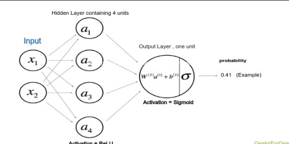
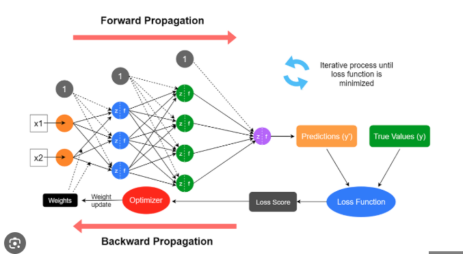

Backward & Forward Propogation#
Forward and backward propagation are the core mechanics of how neural networks learn. They are simply:
Forward pass → compute predictions.
Backward pass → compute errors and update weights.
Let’s go step-by-step with both mathematical intuition and conceptual explanation.
Forward Propagation — the prediction phase#
The forward pass means feeding input data through the network layer by layer to produce an output.
Forward propagation in a neural network is the process of passing input data through the model to generate an output (prediction). Here are the core steps, both intuitively and mathematically:

Input Layer#
The model receives input features \(X\).
Example: if predicting house price → inputs might be area, rooms, and location features. $\( X = [x_1, x_2, x_3, \dots, x_n] \)$
Weighted Sum (Linear Transformation)#
Each neuron in the next layer computes a weighted sum of its inputs plus a bias:
Where:
\(W\) = weight matrix
\(b\) = bias vector
\(z\) = net input to the neuron
Intuition: Each neuron learns “how much importance” (weight) to give each feature.
Apply Activation Function#
Each neuron’s linear output \(z\) is passed through a non-linear activation function \(f(z)\):
Common activation functions:
ReLU: \(f(z) = \max(0, z)\)
Sigmoid: \(f(z) = \frac{1}{1 + e^{-z}}\)
Tanh: \(f(z) = \tanh(z)\)
Softmax: converts output to probabilities (used in classification)
Purpose: Introduces non-linearity → allows the network to learn complex, non-linear relationships.
Pass Activations Forward#
The activated outputs \(a\) from one layer become the inputs to the next layer: $\( a^{(l)} = f(W^{(l)} a^{(l-1)} + b^{(l)}) \)$
This continues layer by layer, from input → hidden → output.
Output Layer#
The final layer produces predictions:
For regression: direct numeric output
For classification: use Softmax or Sigmoid to get probabilities
Example (binary classification):
Compute Loss#
Compare predicted output \(\hat{y}\) with actual output \(y\) using a loss function:
Examples:
MSE (Mean Squared Error): for regression $\( L = \frac{1}{m}\sum (y - \hat{y})^2 \)$
Cross-Entropy Loss: for classification $\( L = -\frac{1}{m}\sum [y\log(\hat{y}) + (1-y)\log(1-\hat{y})] \)$
Summary of Forward Propagation Steps#
Step |
Operation |
Formula |
|---|---|---|
1 |
Input features |
\(X\) |
2 |
Linear transformation |
\(z = W \cdot X + b\) |
3 |
Activation |
\(a = f(z)\) |
4 |
Pass to next layer |
\(a^{(l)} = f(W^{(l)}a^{(l-1)} + b^{(l)})\) |
5 |
Output prediction |
\(\hat{y} = f(z^{(L)})\) |
6 |
Compute loss |
\(L(y, \hat{y})\) |
In essence: Forward propagation = taking data, multiplying by weights, adding biases, applying activation, and producing predictions.
Would you like me to visualize this with a simple PyTorch example and flow diagram next?
Example: single neuron#
Where:
\(x\) = input
\(W\) = weight
\(b\) = bias
\(f\) = activation (e.g., ReLU, tanh, sigmoid)
\(y\) = neuron output
For multiple layers: $\( a^{(l)} = f(W^{(l)} a^{(l-1)} + b^{(l)}) \)$
Each layer takes the previous layer’s output \(a^{(l-1)}\) as its input.
The final layer produces: $\( \hat{y} = a^{(L)} = f(W^{(L)} a^{(L-1)} + b^{(L)}) \)$
This gives a prediction \(\hat{y}\).
Loss function#
To measure how wrong the prediction is, we use a loss function: $\( L = \text{Loss}(\hat{y}, y_{\text{true}}) \)$ Examples:
MSE (for regression): \(L = \frac{1}{2}(y - \hat{y})^2\)
Cross-entropy (for classification)
Intuition#
Think of forward propagation like running a factory:
Input → passes through several machines (layers)
Each machine transforms it (via weights + activations)
Final product = prediction
Compare with expected product → compute error
The weights control how much each “machine” affects the result.
Backward Propagation (Weight Updation)#
Once the network computes the error, it must learn how to reduce it. This happens by computing gradients and updating the weights.

Backward propagation (Backpropagation) is the process by which a neural network learns — it computes gradients of the loss function with respect to weights and biases, then updates them to minimize the loss.
Intuition#
Think of forward propagation as prediction, and backpropagation as correction.
Forward pass → predict output
Compare prediction with actual output → compute loss
Backward pass → calculate how each weight contributed to that loss
Update weights to reduce the error next time
Steps in Backpropagation#
Let’s break it down systematically:
1. Forward Pass#
Compute outputs using current weights:
Then compute the loss:
\(L = \text{Loss}(y, \hat{y})\)#
2. Compute Error at Output Layer#
We calculate how far the prediction is from the target.
For example, if using Mean Squared Error (MSE): $\( \frac{\partial L}{\partial a^{(L)}} = \hat{y} - y \)$
If using Cross Entropy with Softmax, the gradient is simply: $\( \frac{\partial L}{\partial z^{(L)}} = \hat{y} - y \)$#
3. Compute Gradient for Each Layer (Chain Rule)#
The key formula in backpropagation:
Using chain rule:
Then propagate the error backward:
4. Compute Gradients for Weights and Biases#
5. Update Parameters (Gradient Descent)#
Weights and biases are adjusted opposite to the gradient to reduce loss:
Where \(\eta\) = learning rate (small constant controlling step size)
6. Repeat#
Repeat forward → backward → update until loss converges or accuracy stabilizes.
Summary Table
Step |
Description |
Formula |
|---|---|---|
1 |
Forward pass |
\(a^{(l)} = f(W^{(l)}a^{(l-1)} + b^{(l)})\) |
2 |
Compute loss |
\(L(y, \hat{y})\) |
3 |
Output error |
\(\frac{\partial L}{\partial a^{(L)}}\) |
4 |
Backpropagate error |
\(\frac{\partial L}{\partial z^{(l)}} = \frac{\partial L}{\partial a^{(l)}} \cdot f'(z^{(l)})\) |
5 |
Compute gradients |
\(\frac{\partial L}{\partial W^{(l)}} = \frac{\partial L}{\partial z^{(l)}} \cdot (a^{(l-1)})^T\) |
6 |
Update parameters |
\(W^{(l)} = W^{(l)} - \eta \frac{\partial L}{\partial W^{(l)}}\) |
Intuitive Analogy#
Imagine shooting arrows at a target:
Forward pass → shoot the arrow (prediction).
Compute loss → measure how far you missed.
Backpropagation → learn how much to adjust your aim.
Update weights → aim better next time.
Goal#
Find how each weight contributed to the error: $\( \frac{\partial L}{\partial W^{(l)}} \)$
Then update each weight to reduce the loss: $\( W^{(l)} = W^{(l)} - \eta \frac{\partial L}{\partial W^{(l)}} \)$
where \(\eta\) is the learning rate.
The Chain Rule (core idea)#
Because each layer depends on the previous one, we use the chain rule of calculus:
Where:
\(a^{(l)} = f(z^{(l)})\)
\(z^{(l)} = W^{(l)} a^{(l-1)} + b^{(l)}\)
This “chain” allows the loss gradient to flow backward through the network.
Backpropagation steps#
Compute loss gradient at output layer: $\( \delta^{(L)} = \frac{\partial L}{\partial a^{(L)}} \odot f'(z^{(L)}) \)$
Propagate backward through hidden layers: $\( \delta^{(l)} = (W^{(l+1)})^T \delta^{(l+1)} \odot f'(z^{(l)}) \)$
Compute gradients for weights: $\( \frac{\partial L}{\partial W^{(l)}} = \delta^{(l)} (a^{(l-1)})^T \)$
Update weights and biases: $\( W^{(l)} \leftarrow W^{(l)} - \eta \frac{\partial L}{\partial W^{(l)}} \)\( \)\( b^{(l)} \leftarrow b^{(l)} - \eta \frac{\partial L}{\partial b^{(l)}} \)$
Intuitive Understanding#
Forward pass: make a prediction. (Information flows forward.)
Backward pass: assign blame to each weight. (Error flows backward.)
You can think of it like:
The network first guesses → measures how bad the guess is → adjusts itself to guess better next time.
Each weight learns how much it contributed to the total error.
Example (simplified)#
Say: $\( y = f(Wx + b), \quad f = \text{sigmoid} \)\( and loss: \)\( L = \frac{1}{2}(y - \hat{y})^2 \)$
Then: $\( \frac{\partial L}{\partial W} = (y - \hat{y}) \cdot f'(Wx + b) \cdot x \)$
This shows how the input and error interact to guide the weight change.
Full Workflow#
Step |
Name |
What Happens |
|---|---|---|
1 |
Forward propagation |
Input flows through layers; get output (\hat{y}). |
2 |
Compute loss |
Compare (\hat{y}) and (y). |
3 |
Backward propagation |
Compute gradients for each weight. |
4 |
Update weights |
Adjust parameters to reduce loss. |
5 |
Repeat |
Iterate over many epochs until convergence. |
Intuition from Optimization#
Neural networks are just nonlinear functions: $\( \hat{y} = f(X; W) \)\( Training = **minimizing a loss function** over weights (W): \)\( W^* = \arg\min_W L(f(X; W), y) \)$ Backpropagation gives the direction of steepest descent, and gradient descent updates the parameters in that direction.
Key Points Summary
Concept |
Description |
|---|---|
Forward pass |
Compute predictions |
Backward pass |
Compute gradients (via chain rule) |
Loss function |
Measures prediction error |
Gradient |
Direction of steepest loss decrease |
Optimizer |
Updates parameters using gradients |
Learning rate |
Controls step size of update |
In short:
Forward propagation: turns inputs into predictions. Backward propagation: turns prediction errors into learning signals. Together they are the heartbeat of every neural network.
import torch
import torch.nn as nn
import torch.nn.functional as F
# ---- 1. Prepare input and target ----
x = torch.tensor([[0.5, -1.5]], dtype=torch.float32) # Input: [1, 2]
y_true = torch.tensor([[1.0]], dtype=torch.float32) # Target output
# ---- 2. Define weights and biases (same as manual example) ----
W1 = torch.tensor([[0.1, 0.2],
[-0.3, 0.4]], dtype=torch.float32, requires_grad=True)
b1 = torch.zeros(2, dtype=torch.float32, requires_grad=True)
W2 = torch.tensor([[0.2, -0.5]], dtype=torch.float32, requires_grad=True)
b2 = torch.tensor([0.1], dtype=torch.float32, requires_grad=True)
# ---- 3. Forward pass ----
# Hidden layer
z1 = x @ W1.T + b1 # Linear transform
a1 = torch.sigmoid(z1) # Activation
# Output layer
z2 = a1 @ W2.T + b2
y_pred = torch.sigmoid(z2)
# ---- 4. Compute loss ----
loss = 0.5 * (y_true - y_pred).pow(2).sum()
print(f"Forward pass:")
print(f"z1 = {z1.detach().numpy()}")
print(f"a1 = {a1.detach().numpy()}")
print(f"z2 = {z2.item():.6f}, y_pred = {y_pred.item():.6f}")
print(f"Loss = {loss.item():.6f}")
# ---- 5. Backward pass ----
loss.backward()
# ---- 6. Print gradients ----
print("\nGradients:")
print("dL/dW2 =", W2.grad)
print("dL/db2 =", b2.grad)
print("dL/dW1 =", W1.grad)
print("dL/db1 =", b1.grad)
# ---- 7. Update parameters (one gradient descent step) ----
learning_rate = 0.1
with torch.no_grad():
W1 -= learning_rate * W1.grad
b1 -= learning_rate * b1.grad
W2 -= learning_rate * W2.grad
b2 -= learning_rate * b2.grad
# Zero gradients after update
W1.grad.zero_()
b1.grad.zero_()
W2.grad.zero_()
b2.grad.zero_()
# ---- 8. Recalculate new output ----
z1_new = x @ W1.T + b1
a1_new = torch.sigmoid(z1_new)
z2_new = a1_new @ W2.T + b2
y_pred_new = torch.sigmoid(z2_new)
new_loss = 0.5 * (y_true - y_pred_new).pow(2).sum()
print("\nAfter weight update:")
print(f"y_pred (old) = {y_pred.item():.6f}, y_pred (new) = {y_pred_new.item():.6f}")
print(f"Loss (old) = {loss.item():.6f}, Loss (new) = {new_loss.item():.6f}")
Forward pass:
z1 = [[-0.25 -0.75]]
a1 = [[0.4378235 0.3208213]]
z2 = 0.027154, y_pred = 0.506788
Loss = 0.121629
Gradients:
dL/dW2 = tensor([[-0.0540, -0.0396]])
dL/db2 = tensor([-0.1233])
dL/dW1 = tensor([[-0.0030, 0.0091],
[ 0.0067, -0.0201]])
dL/db1 = tensor([-0.0061, 0.0134])
After weight update:
y_pred (old) = 0.506788, y_pred (new) = 0.510931
Loss (old) = 0.121629, Loss (new) = 0.119594